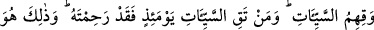

“nerede benim çocuğum?”, “nerede benim eşim?” der. Kendisine: “Onlar senin
işlediğin tâat amellerini işlemediler” cevabı verilir. Müminin: “Ben bu amelleri, hem
kendim hem de onlar için işlerdim” demesi üzerine şöyle nidâ edilir: “Onları da
cennete koyun!”
Bu ifadelerde, kulluk edenlerin ibâdet etmeyenlere şefâat edeceklerine dair bir ümit
vardır.
Enes b. Malik (r.a.)’ten Hz. Peygamber (s.a.)’in şöyle buyurduğu rivâyet edilir:
“Kıyamet günü gelip çattığında müslümanların küçük çocuklarına «Kabirlerinizden
çıkın!» diye nidâ edilir ve kabirlerinden çıkarlar. Yine bu küçüklere: «Haydi grup
grup cennete koşun!» diye nidâ edildiğinde: «Ya Rab!» derler, «ana-babalarımız da
yanımızda olacak mı?» Bunun üzerine: «Haydi grup grup cennete koşun!» diye ikinci
kez nidâ edilir. Onlar yine: «Ya Rab! Ana-babalarımız da bizlerle birlikte mi?» derler.
Bu serzeniş Rabbimizin hoşuna gider de: «Evet ana-babalarınız da yanınızda
olacak!» buyurur. Bu buyruğun akabinde her çocuk hemen ana-babasına doğru
emekler, ellerinden tutar ve onları da cennete sokar. Çünkü o gün çocuklar ana-
babalarını bugün evlerinizdeki çocuklarınızın sizleri tanımasından daha iyi
tanıyacaklardır.”[166]
el-Vâkı’âtü’l-Mahmûdiyye’de Şeyh Üftade (k.s) namıyla meşhur şeyh efendi
hazretlerinden naklen şöyle denmektedir: Her kim kendisi cennetlik olduğu halde eşi
cennetlik değilse, Allah cennette eşinin bir benzerini yaratır ve onunla tesellî bulur.
Şayet “bir benzeriyle teselli nasıl olur?” diyecek olursan derim ki: O, onun benzeri
olduğunu bilmeyecektir. Çünkü onun eşinin bizzat kendisi değil de benzeri olduğunu
tahmin etse teselli bulamaz. Aksine mahzûn olur. Oysa cennet sevinç ve mutluluk
yurdudur. Âdem (a.s) bile cennette mahzûn olmasın diye dünyaya gönderilmiştir.
“Şüphesiz” kudret dâhilindeki hiçbir şeyin kendisi açısından imkansız olmadığı
“Azîz”; vâdini gerçekleştirmek ve sözünde durmak gibi eşsiz bir hikmetin gerektirdiği
şeylerden başkasını asla yapmayan “Hakîm ancak sensin.”
et-Te’vîlâtü’n-Necmiyye’de der ki: Sen öyle bir Aziz’sin ki günah işleseler de
tevbekârlara yine güç verir, onları seversin. Sen seni sevenleri günah işlemekten
korumadığın durumlarda bile bir Hakîm’sin; daha sonra bunların tevbesini kabûl
edersin.
Şâirin dediği gibi:
Ben Senin hükmünden baş çekmiyorum;
Fakat Sen ne hükmedersen başıma o geliyor.